Profil Kota Kelahiran
Kota Semarang adalah ibu kota Provinsi Jawa Tengah yang memadukan keindahan alam, kekayaan sejarah, dan kemajuan modern dalam satu harmoni yang memikat. Terletak di pesisir utara Pulau Jawa, Semarang dikenal dengan karakter geografisnya yang unik terbagi menjadi Semarang Atas yang sejuk di perbukitan dan Semarang Bawah yang sibuk di wilayah pesisir. Sebagai pusat pemerintahan dan ekonomi Jawa Tengah, Semarang tumbuh menjadi kota metropolitan yang modern dengan infrastruktur lengkap, mulai dari Pelabuhan Tanjung Emas, Bandara Internasional Jenderal Ahmad Yani, hingga kawasan industri dan perkantoran yang terus berkembang pesat.
Namun, di balik kemegahannya, Semarang tetap mempertahankan pesona sejarah dan budaya yang kental. Kawasan Kota Lama dengan bangunan kolonialnya menghadirkan nuansa Eropa di tengah kota tropis, sementara Lawang Sewu, Klenteng Sam Poo Kong, dan Masjid Agung Jawa Tengah menjadi simbol keberagaman dan toleransi masyarakatnya. Kuliner khas seperti lumpia Semarang, tahu gimbal, bandeng presto, dan wingko babat juga menjadikan kota ini surga bagi para pecinta makanan tradisional.
Kini, Semarang terus bertransformasi menjadi kota modern yang cerdas dan berwawasan lingkungan, tanpa meninggalkan identitas budayanya. Dengan perpaduan antara sejarah masa lampau dan semangat pembangunan masa kini, Semarang layak disebut sebagai kota yang tidak hanya nyaman untuk ditinggali, tetapi juga selalu menarik untuk dikunjungi dan dikagumi.
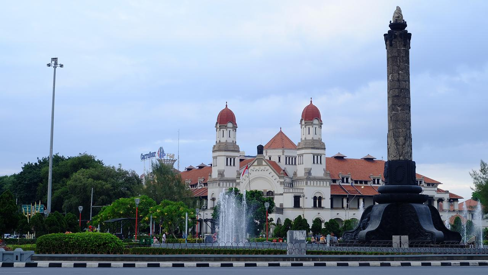
Informasi detail tentang Kota Semarang:
Klik Disini
Kembali Keatas
Galeri Kota Kelahiran
| Simpang Lima | Sampokong | Kota Lama |
|---|---|---|
| 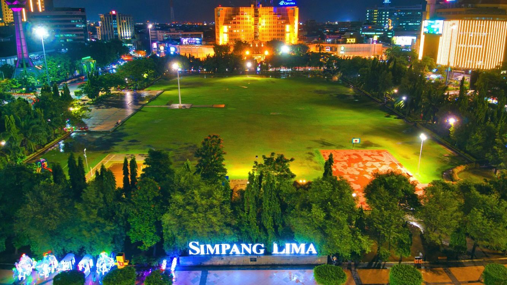 | 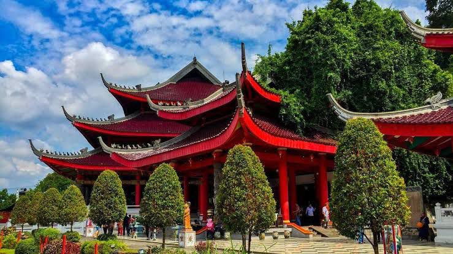 | 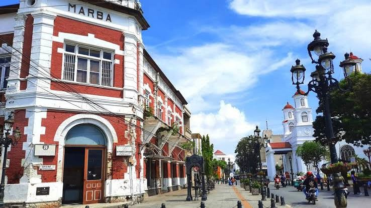 |
Kembali ke atas
Pendidikan
Perjalanan pendidikan dimulai dari TK Al Azam selama 1 tahun. Selanjutnya melanjutkan pendidikan ke MI Taufiqiyah Semarang
selama 6 tahun. Lalu melanjutkan pendidikan ke SMP Unggulan Pondok Modern Selamat Kendal selama 3 tahun. Kemudian melanjutkan pendidikan ke SMK Negeri 11 Semarang
selama 3 tahun. Dan sekarang melanjutkan pendidikan ke Perguruan Tinggi di Universitas Dian Nuswantoro Semarang Jurusan Sistem Informasi.
| No | Pendidikan | Periode | Status |
|---|---|---|---|
| 1 | MI Taufiqiyah | 2012-2018 | LULUS |
| 2 | SMP Unggulan Pondok Modern Selamat Kendal | 2018-2021 | LULUS |
| 3 | SMK Negeri 11 Semarang | 2021-2024 | LULUS |
| 3 | Universitas Dian Nuswantoro Semarang | 2024-Selesai | AKTIF |
| SMP Unggulan Pondok Modern Selamat Kendal | SMK Negeri 11 Semarang | Universitas Dian Nuswantoro |
|---|---|---|
| 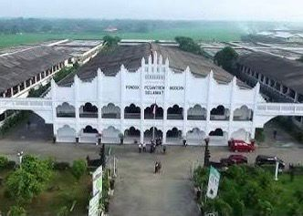 | 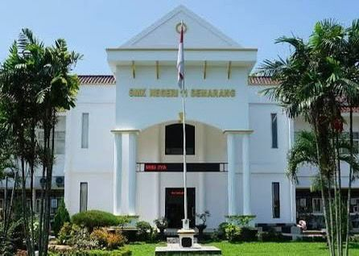 | 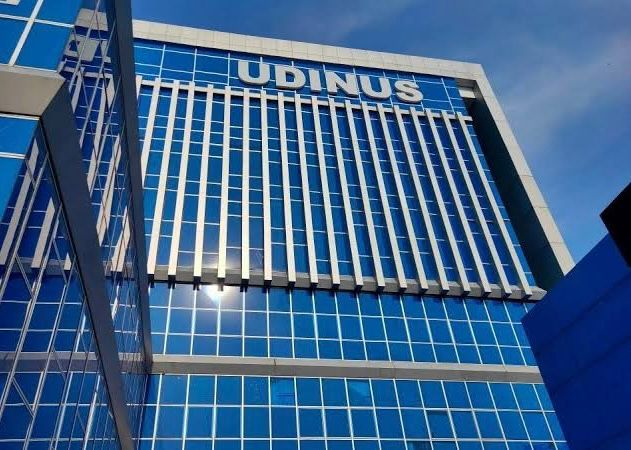 |
Website Resmi Pendidikan:
MI Taufiqiyah Semarang
SMP Unggulan Pondok Modern Selamat Kendal
SMK Negeri 11 Semarang
Universitas Dian Nuswantoro
Kembali Keatas
Karir
Selama menjalani Praktik Kerja Lapangan (PKL) di PT. TVKU Semarang, saya mendapatkan pengalaman yang sangat berharga dan membuka wawasan luas mengenai dunia penyiaran televisi, khususnya dalam bidang produksi video. Saya berkesempatan untuk terlibat langsung sebagai kameramen dan editor, dua peran penting yang saling berkaitan dalam menghasilkan tayangan berkualitas. Sebagai kameramen, saya bertanggung jawab dalam proses pengambilan gambar untuk berbagai program, seperti liputan berita, dokumentasi kegiatan, talk show, hingga program hiburan. Dalam tugas ini, saya belajar banyak tentang teknik pengambilan gambar yang baik — mulai dari pengaturan pencahayaan, komposisi, fokus, hingga pemilihan angle yang tepat agar hasil visual tampak hidup dan komunikatif. Saya juga beradaptasi dengan ritme kerja di lapangan yang cepat dan dinamis, serta mampu bekerja sama dengan tim reporter, produser, dan kru lainnya untuk memastikan setiap proses produksi berjalan lancar.
Selain di lapangan, saya juga terlibat dalam tahap pasca-produksi sebagai video editor. Pada bagian ini, saya bertugas menyusun hasil rekaman menjadi tayangan utuh yang siap siar. Saya menggunakan perangkat lunak editing profesional untuk melakukan pemotongan, penyusunan, penambahan efek visual, backsound, transisi, serta penyesuaian warna agar hasil akhir terlihat menarik dan sesuai standar siaran TVKU. Melalui proses ini, saya belajar pentingnya kreativitas, ketelitian, dan kecepatan dalam mengolah materi video agar pesan yang disampaikan bisa diterima dengan baik oleh penonton.
Selama PKL di PT. TVKU Semarang, saya tidak hanya mengasah kemampuan teknis di bidang kamera dan editing, tetapi juga belajar tentang manajemen waktu, kerja tim, disiplin, dan tanggung jawab profesional dalam dunia kerja nyata. Saya merasakan bagaimana setiap detail, baik dalam proses pengambilan gambar maupun pengeditan, memiliki peran penting dalam menciptakan tayangan yang informatif, menarik, dan berkualitas. Pengalaman ini menjadi bekal berharga bagi saya untuk mengembangkan diri di bidang produksi media dan komunikasi visual, serta memotivasi saya untuk terus belajar dan berinovasi di dunia kreatif dan penyiaran.
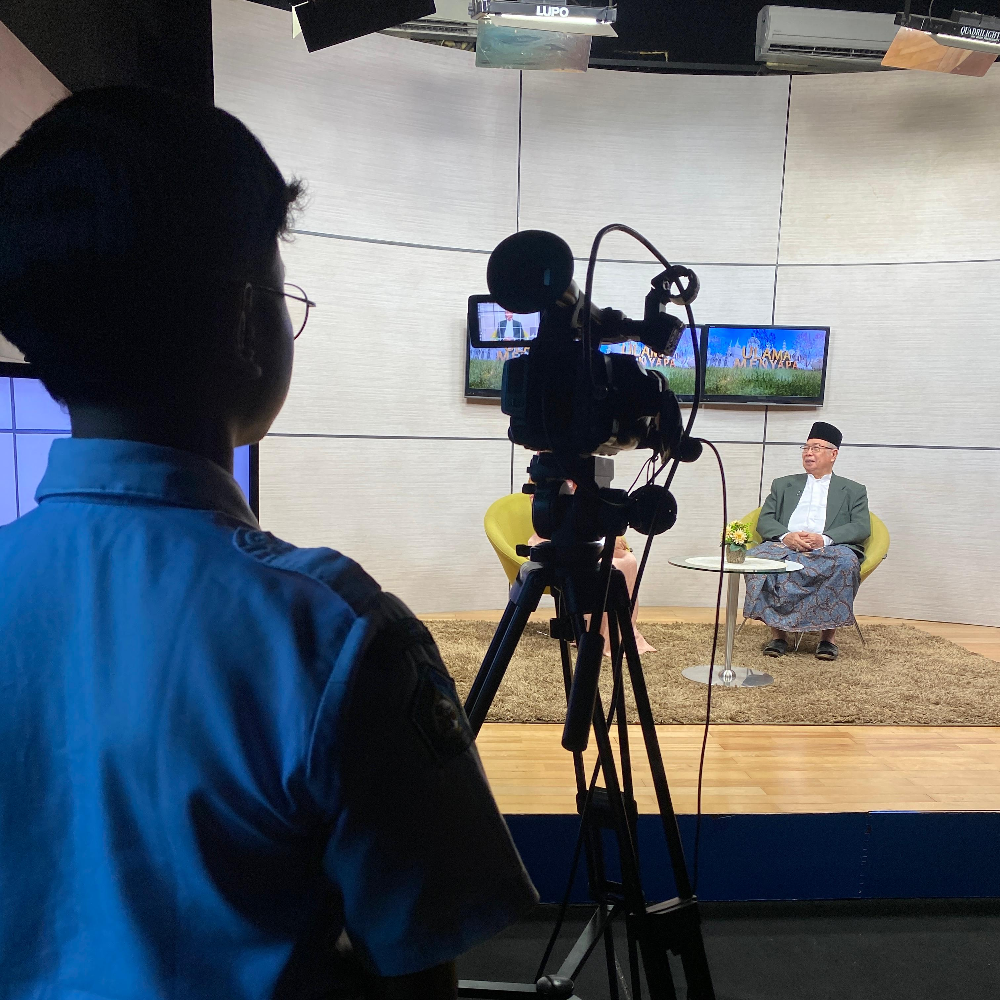
Informasi lengkap tentang PT. TVKU Semarang: Klik Disini
Kembali ke atas
Hobi
- Bermain Billiard
- Berenang
- Futsal
- Naik Gunung
- Bermain Motor
| Naik Gunung | Bermain Billiard | Bermain Motor |
|---|---|---|
| 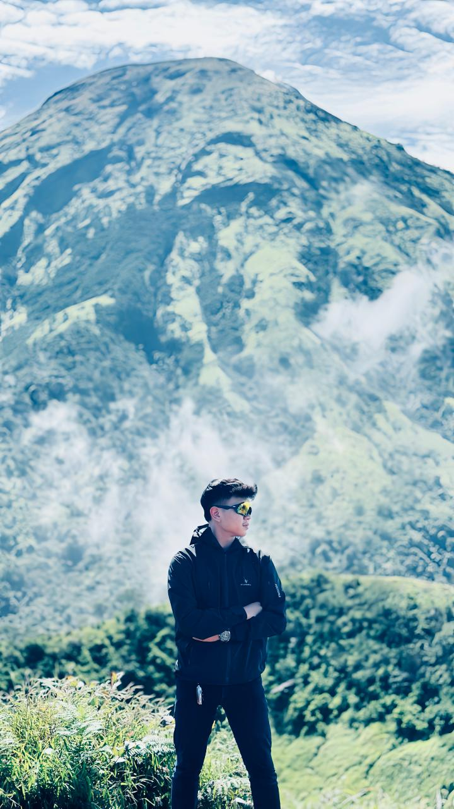 | 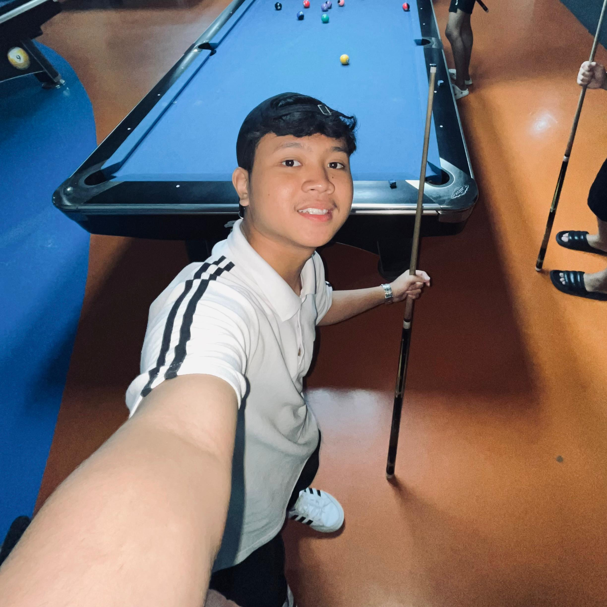 | 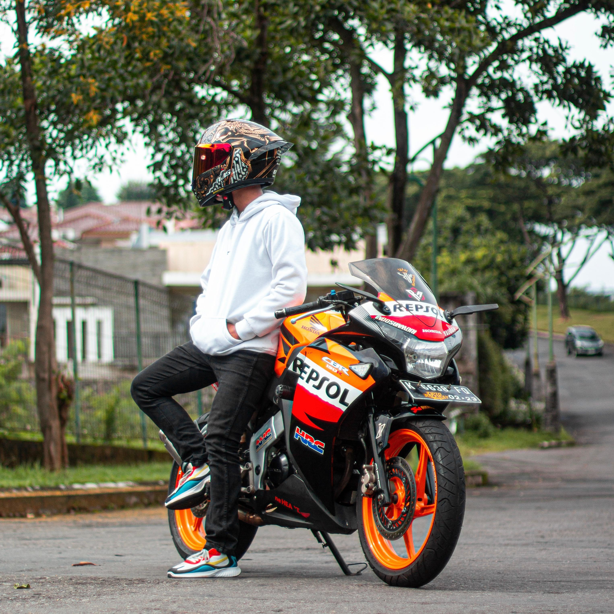 |
Kembali ke atas